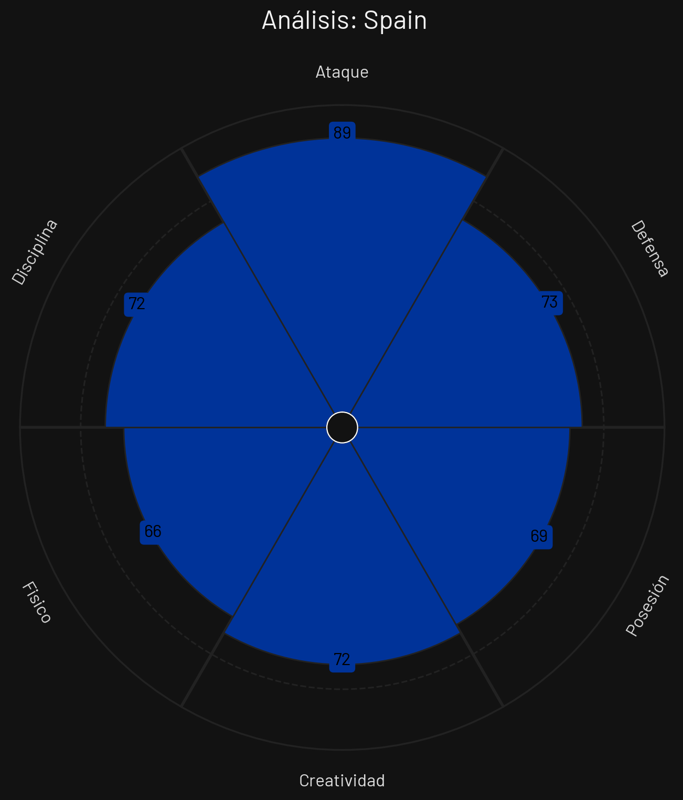
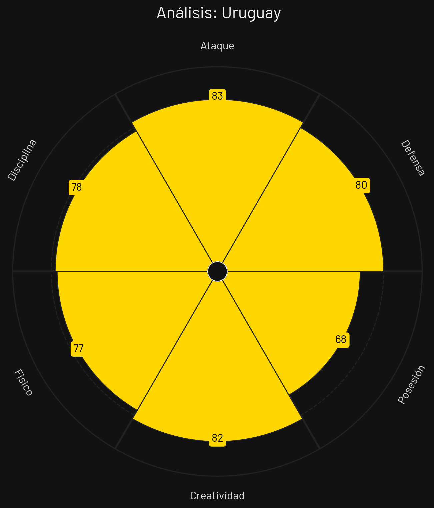
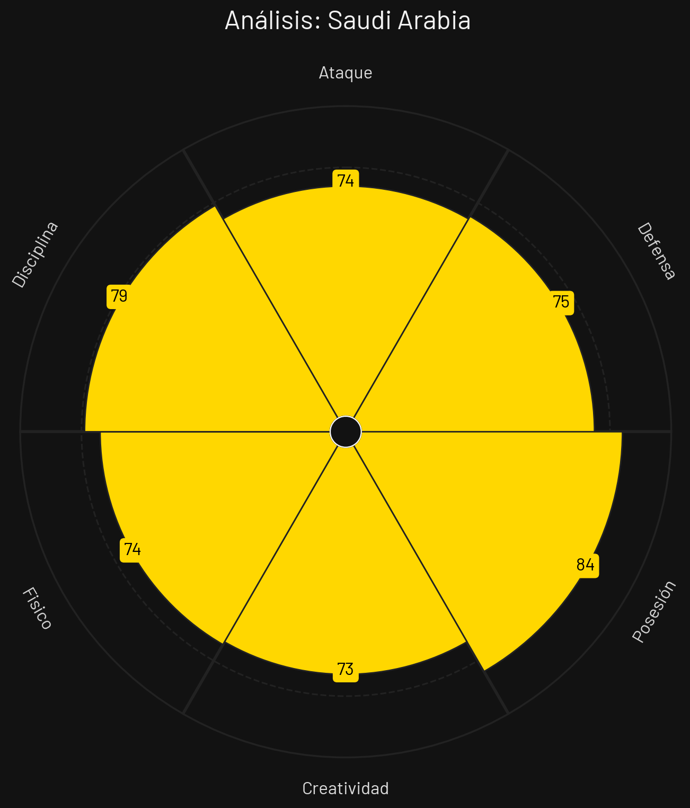
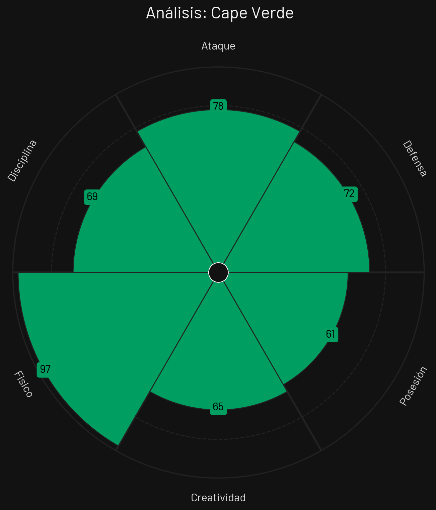

🏆 Tabla de Posiciones
| Pos | Equipo | PJ | G | E | P | GF | GC | DG | Pts |
|---|---|---|---|---|---|---|---|---|---|
| 1 |
 España
España
|
3 | 2 | 1 | 0 | 5 | 0 | 5 | 7 |
| 2 |
 Cabo Verde
Cabo Verde
|
3 | 0 | 3 | 0 | 2 | 2 | 0 | 3 |
| 3 |
 Uruguay
Uruguay
|
3 | 0 | 2 | 1 | 3 | 4 | -1 | 2 |
| 4 |
 Arabia Saudí
Arabia Saudí
|
3 | 0 | 2 | 1 | 1 | 5 | -4 | 2 |
España

Estilo de Juego e Influencia
Juego de posición con alto volumen de pases, circulación rápida buscando desorganizar al rival y presión alta inmediata.
- Formación Base: 4-3-3
- xG Promedio: 2.20 por 90 min
- Zona de Presión: Bloque Alto (PPDA 6.8)
- Jugador Clave: Rodri
Uruguay

Estilo de Juego e Influencia
Presión tras pérdida ultrasónica de alta intensidad física, verticalidad en transición y excelente volumen de disparo.
- Formación Base: 4-3-3 / 4-2-3-1
- xG Promedio: 1.92 por 90 min
- Zona de Presión: Bloque Alto (PPDA 7.2)
- Jugador Clave: Federico Valverde
Arabia Saudí

Estilo de Juego e Influencia
Defensa coordinada con bloque de presión intermedio, salida limpia en corto asociativa y transiciones veloces.
- Formación Base: 4-1-4-1
- xG Promedio: 1.18 por 90 min
- Zona de Presión: Bloque Medio (PPDA 10.8)
- Jugador Clave: Salem Al-Dawsari
Cabo Verde

Estilo de Juego e Influencia
Bloque muy bajo, marcaje concentrado en el embudo central y contraataques directos aislados buscando velocidad.
- Formación Base: 4-5-1
- xG Promedio: 0.92 por 90 min
- Zona de Presión: Bloque Bajo (PPDA 12.5)
- Jugador Clave: Ryan Mendes
Análisis Técnico: Grupo H - Mundial 2026
Basándome en los perfiles tácticos proporcionados, presento un análisis técnico detallado de los equipos del Grupo H:
📊 Comparativa General de Atributos
| Atributo | ||||
|---|---|---|---|---|
| Ataque | 89 | 83 | 74 | 78 |
| Defensa | 73 | 80 | 75 | 72 |
| Posesión | 69 | 68 | 84 | 61 |
| Creatividad | 72 | 82 | 73 | 65 |
| Físico | 66 | 77 | 74 | 97 |
| Disciplina | 72 | 78 | 79 | 69 |
🔍 Análisis por Equipo
ESPAÑA
Fortalezas
- Volumen Asociativo (88): Dominio absoluto de posesión y pases.
- Presión Tras Pérdida (85): PPDA extremadamente bajo y coordinado.
- Equilibrio con Rodri (87): Control del mediocentro posicional.
Debilidades
- Contras Espacios Libres (74): Vulnerabilidad si no hay presión tras pérdida efectiva.
Estrategia: Mover el balón de lado a lado con velocidad, fijar defensores por dentro y habilitar extremos en 1v1.
URUGUAY
Fortalezas
- Intensidad Física (87): Despliegue atlético extraordinario de Valverde.
- Transición Rápida (82): Salidas verticales veloces y directas.
- Disparo de Media Distancia (78): Gran capacidad de remate exterior.
Debilidades
- Control de Ritmos Lentos (72): Ansiedad ocasional que desordena el bloque.
Estrategia: Presión asfixiante en campo rival, transiciones rápidas verticales y finalización de jugadas sin demora.
ARABIA SAUDÍ
Fortalezas
- Salida en Corto (76): Buen trato del esférico bajo presión media.
- Amplitud por Bandas (74): Extremos veloces en repliegue.
- Experiencia en Bloque (75): Trabajo coordinado en línea defensiva.
Debilidades
- Pegada Física en Áreas (66): Sufren defensivamente contra delanteros físicos.
Estrategia: Bloque medio agrupado, mantener posesiones cortas para enfriar el partido y contraatacar rápido por los costados.
CABO VERDE
Fortalezas
- Densidad en Embudo Central (77): Defienden el centro con muchos apoyos.
- Velocidad de Mendes (73): Capacidad de escapada individual en contra.
- Cero Presión (74): Juegan motivados por el logro histórico.
Debilidades
- xG Generado (60): Dificultades extremas para generar tiros limpios.
- Falta de Fondo Físico (62): Sufrimiento en los minutos finales del partido.
Estrategia: Mantener replegado el bloque de 5 volantes, tapar líneas de pase centrales y explotar contras directas.
⚔️ Matchups Clave
🏆 Proyección del Grupo
Clasificación Esperada:
🧠 Análisis Táctico Avanzado
A continuación, se presenta un análisis técnico y cuantitativo del **Grupo H** para el Mundial de Fútbol 2026, evaluando las fortalezas, debilidades y las propuestas tácticas de cada selección a partir de sus respectivos perfiles estadísticos.
🔍 Análisis Perfil por Perfil
1. Uruguay
Al examinar el archivo `PerfilTacticoUruguay.png`, la escuadra charrúa se erige como el conjunto más equilibrado y tácticamente completo de todo el sector.
- Fortaleza principal: Un balance de élite entre su propuesta ofensiva (83 en Ataque), solvencia en su propia área (80 en Defensa) y una sobresaliente capacidad de generación (82 en Creatividad). Es un equipo maduro, capaz de dominar diferentes fases del juego.
- Área de mejora: El control posicional del partido. Su registro de 68 en Posesión indica que no priorizan la tenencia lenta del balón, optando en su lugar por ataques más directos y dinámicos tras la recuperación.
2. Arabia Saudita
De acuerdo con los datos del archivo `PerfilTacticoArabiaSaudita.png`, el combinado asiático presenta una identidad sumamente marcada por el control conceptual del esférico.
- Fortaleza principal: Un extraordinario manejo del ritmo del encuentro por medio de la circulación (84 en Posesión, el más alto del grupo) apoyado por un excelente comportamiento estratégico (79 en Disciplina).
- Área de mejora: La profundidad y la contundencia. A pesar de monopolizar la pelota, sus valores en Ataque (74) y Creatividad (73) sugieren que les cuesta transformar esa tenencia en ocasiones manifiestas de gol ante bloques defensivos cerrados.
3. Cabo Verde
El desglose del archivo `PerfilTacticoCaboVerde.png` revela un ecosistema táctico basado por completo en el rigor atlético extremo y la verticalidad.
- Fortaleza principal: Un poderío físico fuera de serie (97 en Físico), siendo el equipo más dominante del grupo en disputas individuales, juego aéreo y repliegues veloces. Su pegada (78 en Ataque) is bastante respetable.
- Área de mejora: La elaboración en la zona medular. Al registrar un 61 en Posesión y un 65 en Creatividad, son un equipo reactivo que sufre si se le obliga a diseñar circuitos de pases elaborados o lentos.
4. España
Al analizar el archivo `PerfilTacticoEspana.png`, "La Roja" exhibe una evolución en su modelo histórico, convirtiéndose en un cuadro eminentemente volcado al área rival.
- Fortaleza principal: Un potencial ofensivo devastador (89 en Ataque), liderando el grupo en efectividad en el último tercio. Sorprende su registro de Posesión (69), lo que delata una transición hacia un fútbol mucho más vertical, punzante y de transiciones veloces.
- Área de mejora: El desgaste y la contención en duelos directos. Su nivel más bajo radica en el apartado Físico (66), lo que combinado con una Defensa regular (73) los expone seriamente frente a rivales de gran despliegue atlético.
⚡ Dinámica Táctica del Grupo
La configuración del Grupo H asegura encuentros de alto voltaje estratégico debido a la incompatibilidad de sus propuestas: